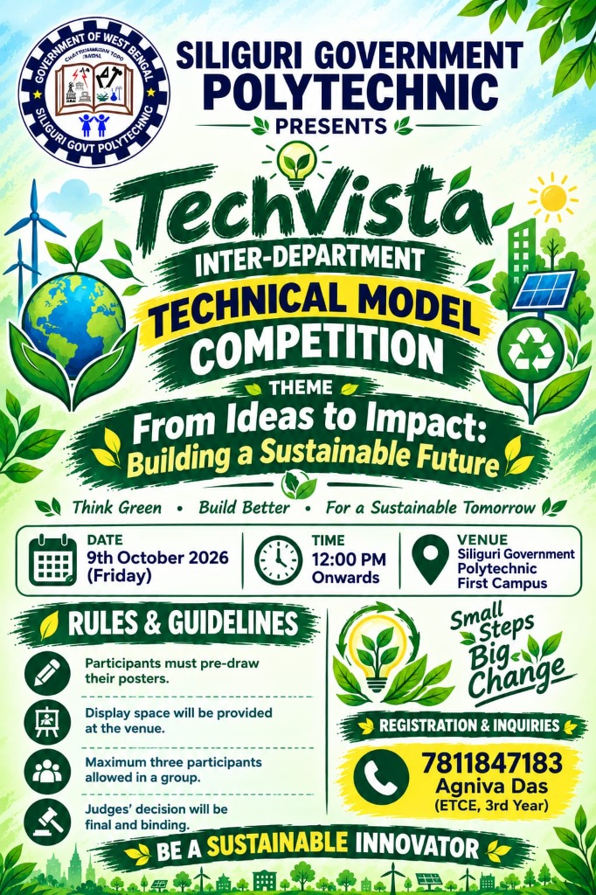
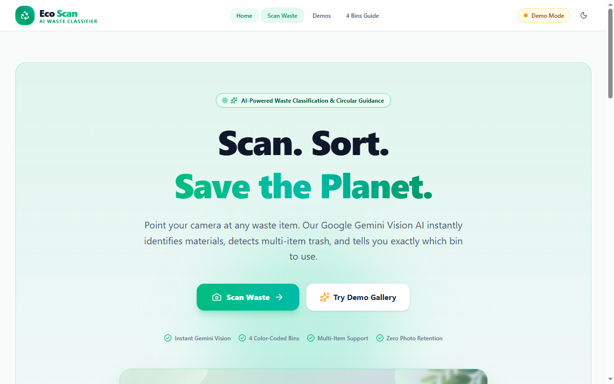
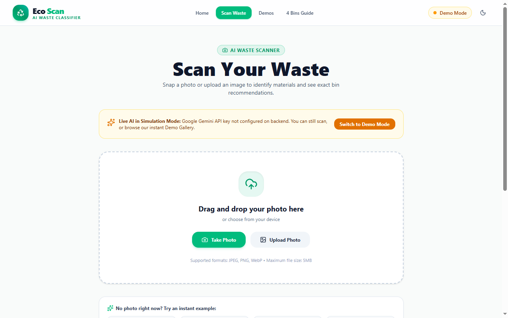
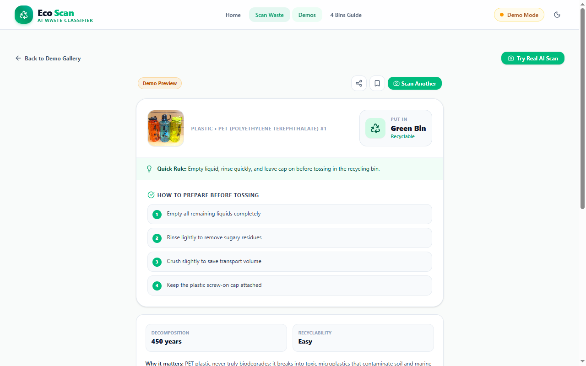
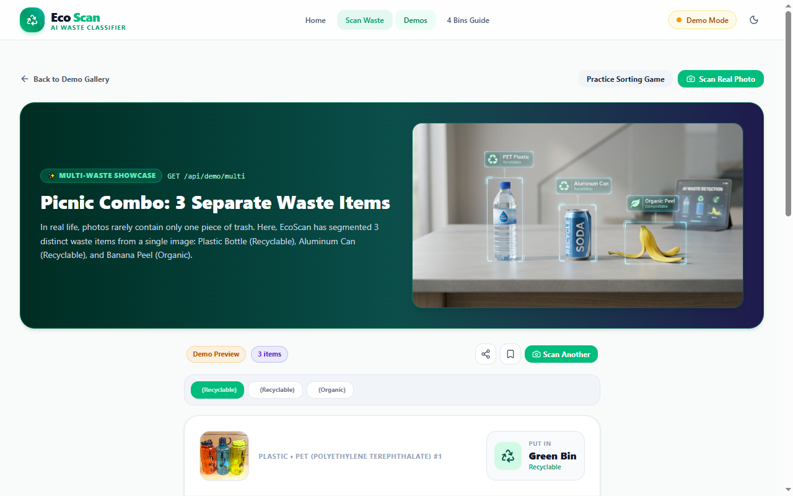
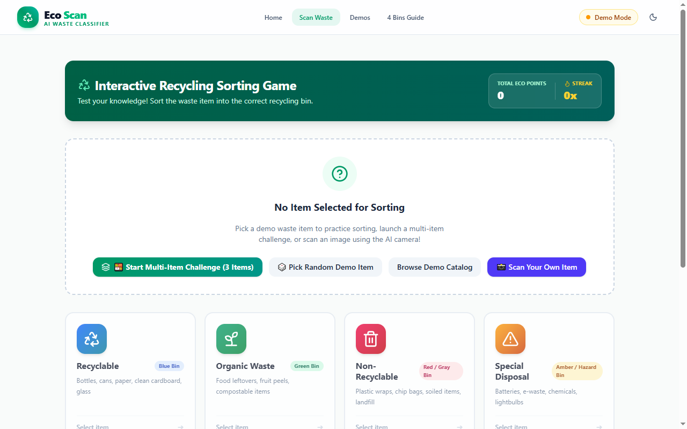
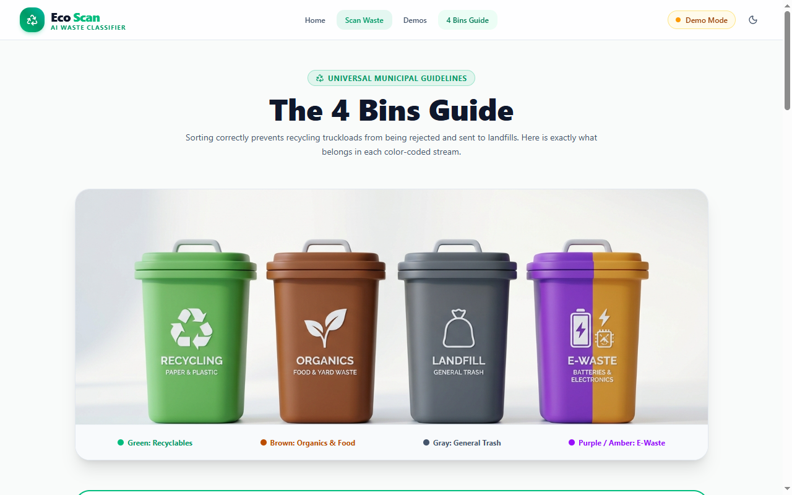

TechVista 2026 • Inter-Department Technical Model Competition
EcoScan AI
AI-Powered Smart Waste Sorting & Recycling Assistant
Theme: "From Ideas to Impact: Building a Sustainable Future"
Think Green • Build Better • For a Sustainable Tomorrow | Small Steps, Big Change
Department of Computer Science and Technology (CST) • Mentor: Faculty Advisor, CST

Introduction & Core Mission
🌱 The EcoScan Solution
- • Instant Vision Recognition: Snap a photo or choose an image to classify municipal waste in <2 seconds.
- • 4-Bin Municipal Matching: Assigns items cleanly to Green (Recyclable), Blue (Landfill), Brown (Organic), or Purple (Hazardous).
- • Actionable Prep Advice: Practical tips such as removing bottle caps, rinsing milk cartons, or crushing soda cans.
- • Gamified Sorting: Tap-to-sort challenge reinforces habits with real-time score points and browser streaks.
🎯 TechVista Alignment
- • Theme Alignment: Directly delivers "From Ideas to Impact: Building a Sustainable Future".
- • Zero Hardware Barrier: Runs universally across smartphones, tablets, and laptops without special sensors.
- • Exhibition Resilience: Built-in 9-item Demo Mode guarantees 100% booth uptime even without internet access.
- • Civic Education: Transforms confusing recycling guidelines into an engaging 5-second habit.
Problem Statement: The Segregation Crisis
⚠️ Current Ground Realities
- • High Landfill Contamination: Over 60% of recyclable plastic ends up dumped in open landfills because wet kitchen waste contaminates clean paper & dry plastics.
- • Confusion at Point-of-Disposal: Citizens guess which bin to use; composite packaging (chips packets, lined cups) causes frequent errors.
- • Hazardous Chemical Leaching: Lithium batteries, tube lights, and e-waste dumped into ordinary bins leach toxic lead into groundwater.
- • Lack of Feedback: No instant feedback exists to motivate correct segregation habits.
💡 Why Software & AI?
- • Computer Vision Accuracy: Google Gemini Vision analyzes visual polymers, packaging labels, and material condition instantly.
- • Zero Additional Hardware: No expensive robotic conveyors needed for consumer awareness; works directly on personal phones.
- • Immediate Educational Guidance: Gives exact instructions (e.g. "Rinse food residue", "Do not puncture battery").
- • Habit Reinforcement: Gamified points and streaks make civic cleanliness rewarding.
Objectives & Technical Scope
✔ Functional Scope
- • Live camera viewfinder & photo upload
- • Multimodal Gemini AI item classification
- • 4-bin municipal matching engine
- • Multi-waste detection (3 items in 1 photo)
- • Tap-to-sort game with score & streaks
- • LocalStorage persistent Eco Points
- • Offline exhibition demo catalog
⚡ Non-Functional Scope
- • Latency: Inference response in < 2 seconds
- • Security: API key strictly hidden in backend
- • Responsive: Flawless on phone, tablet & desktop
- • Resilience: Auto-fallback if AI limits exceeded
- • Reliability: 37/37 passing backend JUnit tests
- • Clean Code: Modular RTK slices & Spring services
⏳ Phase 2 Boundaries
- • User cloud login accounts & DB sync
- • Physical smart-bin robotic servo lids
- • Ultrasonic fill-level hardware sensors
- • Regional Bengali & Hindi voice guidance
- • Municipal GIS ward collection heatmap
- • Offline on-device TensorFlow Lite model
Client - Server - AI Pipeline
React 19 + RTK Query
• Camera & drag-and-drop input
• Redux Toolkit state cache
• LocalStorage (Eco Points)
• Tailwind CSS v4 responsive UI
• Gamified 4-bin sort challenge
Spring Boot 3 (Port 8080)
• ImageValidator (MIME & 5MB)
• GeminiService (AI prompt & parser)
• DemoService (9 offline items)
• GlobalExceptionHandler (RFC format)
• Secure API key isolation
Google Gemini Vision
• Multimodal image-to-JSON
• Material polymer detection
• 4-bin classification schema
• Multi-waste array parser
• Zero API key exposure to browser
POST /api/scan ➔ Gemini Vision. In poor network or exhibition booth demonstrations, the frontend seamlessly utilizes GET /api/demo with zero delay.
Technology Stack & Libraries
Frontend Web
- • React 19
- • Redux Toolkit (RTK)
- • RTK Query (caching)
- • Tailwind CSS v4
- • Lucide React icons
- • Redux Persist
- • Vite 8 Build Tool
Backend Server
- • Java 21 LTS
- • Spring Boot 3.4.3
- • Spring WebClient
- • Jackson JSON Parser
- • Maven Build Tool
- • CORS Security Config
- • JUnit 5 & Mockito
AI & Cloud
- • Google Gemini Vision
- • Multimodal Prompting
- • Structured JSON Output
- • 4-Bin Matching Rules
- • Multi-Waste Parsing
- • Zero Client Key Leakage
- • Demo Catalog Fallback
Dev & Testing
- • Git & GitHub
- • VS Code & IntelliJ
- • pnpm Package Manager
- • Chrome & Edge DevTools
- • Headless Edge CLI
- • REST Client (.http)
- • PptxGenJS (Slides)
Data Models & REST Contracts
WasteResult (DTO Contract)
{
"itemName": "Plastic Water Bottle",
"category": "Plastic (PET #1)",
"bin": "recyclable",
"tip": "Empty remaining liquid and crush bottle",
"warning": "Separate plastic cap before recycling",
"confidenceScore": 0.96,
"recyclable": true
}
MultiWasteResult wraps multiple items with totalDetected, items[], and primaryItem.
Spring Boot REST Endpoints
- GET /api/status ➔ System health & AI readiness
- POST /api/scan ➔ Multipart image upload & AI inference
- GET /api/demo ➔ 9 pre-analyzed demo items catalog
- GET /api/demo/{id} ➔ Detailed single demo breakdown
- GET /api/demo/multi ➔ 3-item multi-waste picnic combo
End-to-End Processing Workflow
Capture Photo
User takes camera snapshot or selects file (<5MB)
Validation
Spring Boot checks image MIME type & file integrity
Gemini Vision
AI extracts item name, polymer & municipal bin
3-Layer Result
Renders bin color, degradation facts & prep tips
Sort & Earn
Tap-to-sort game awards +10 Eco Points to LocalStorage
Core Functional Modules
1. AI Waste Scanner
Live webcam stream, camera flip, drag-and-drop upload zone, and animated scan feedback.
2. 3-Layer Result Visualizer
Layer 1 (Bin recommendation), Layer 2 (Fast facts & degradation time), Layer 3 (Preparation steps).
3. Multi-Waste Detection
Identifies multiple discards in one photo (bottle + can + banana peel) with an interactive queue picker.
4. Gamified Sort Game
4 color-coded municipal bins, real-time score tracker, dynamic streak counters, and feedback audio.
5. Municipal Bin Guide
Comprehensive directory for municipal bin colors with accepted items and hazardous alerts.
6. Offline Demo Engine
9 pre-analyzed demo items catalog ensuring 100% demonstration uptime during technical exhibitions.
Screens: Landing Page & AI Scanner


Screens: 3-Layer Result & Multi-Waste


Screens: Sorting Game & Bin Guide


Methodology: Agile Sprints
Plan & Design
Requirements analysis, UI wireframes, municipal bin classification study.
Frontend UI
React 19 setup, Tailwind CSS v4 design, webcam viewfinder integration.
AI Vision
Google Gemini Vision integration, structured JSON prompt engineering.
Backend Gateway
Spring Boot 3 migration, secret API key isolation, CORS & MIME validation.
QA & Hardening
37 unit tests, multi-waste detection, exhibition demo resilience.
Testing & Quality Assurance Matrix
| Test Type | Component Tested | Methodology | Status |
|---|---|---|---|
| Backend Unit Testing | ImageValidator, GeminiParser, DemoService | JUnit 5, Mockito, Maven runner | ✔ 37 / 37 Tests Passing |
| Image Validation | Invalid MIME files, text notes, >5MB files | HTTP 400 Bad Request verification | ✔ Validated & Rejected |
| End-to-End Integration | React RTK Query ➔ Spring Boot ➔ Gemini | Multipart upload & JSON payload check | ✔ Response < 2.0s |
| Exhibition Resilience | Offline Demo Catalog fallback | Simulated 502 error / Wi-Fi disconnect | ✔ 100% Uptime Guaranteed |
| Responsive Viewport | Camera viewfinder, cards, touch targets | Chrome DevTools, mobile viewports | ✔ Mobile & PC Tested |
Challenges Faced & Solutions
Calling Gemini directly from React exposed credentials in browser network dev tools. Solution: Moved all AI requests behind a secure Spring Boot gateway where credentials are kept strictly server-side.
Unreliable college exhibition Wi-Fi risked live demonstration failures. Solution: Built an offline Demo Catalog (/api/demo) with 9 pre-analyzed items guaranteeing zero downtime.
Spring WebClient automatically URL-encoded Google's :generateContent endpoint into %3A, yielding 404s. Solution: Solved using URI.create() for exact RFC compliance.
Real photos contain multiple items (e.g., bottle + can + peel). Solution: Engineered a MultiWasteResult schema with structured array parsing and an interactive batch selector.
Impact & Link to TechVista Theme
Sustainable Cities
- • Cleaner urban & campus surroundings
- • Less littering in local municipal wards
- • Fosters community recycling habits
- • Streamlines municipal collection routes
Responsible Consumption
- • Diverts recyclable plastics from landfill
- • Prevents recycling stream contamination
- • Promotes circular economy practices
- • Plain-English waste reduction tips
Climate Action
- • Reduces methane emissions from landfills
- • Prevents toxic chemical leaching from batteries
- • Saves energy required for virgin plastic
- • Supports Swachh Bharat & Green WB Mission
Future Roadmap: IoT Smart Bins
Full-Stack Vision AI Core
- ✔ React 19 + RTK Query frontend
- ✔ Spring Boot 3 secure gateway proxy
- ✔ Google Gemini Vision integration
- ✔ Multi-waste detection & offline demo
IoT Smart Bin Hardware
- ⏳ Raspberry Pi / ESP32 physical prototype
- ⏳ Servo-motor motorized lids opening automatically
- ⏳ Ultrasonic fill-level capacity alerts
- ⏳ On-device TensorFlow Lite model
Municipal Ward Integration
- ⏳ Regional voice guidance in Bengali & Hindi
- ⏳ Municipal Corporation GIS analytics portal
- ⏳ Smart truck collection route planning
- ⏳ Civic coupons & utility bill rebate perks
Thank You!
Small Steps, Big Change • Be a Sustainable Innovator
EcoScan demonstrates how modern web engineering coupled with Google Gemini Vision AI can eliminate waste segregation ambiguity, promote lifelong civic recycling habits through gamification, and build a sustainable green future for Siliguri Government Polytechnic and our broader community.
Department of Computer Science and Technology • Siliguri Government Polytechnic • TechVista 2026